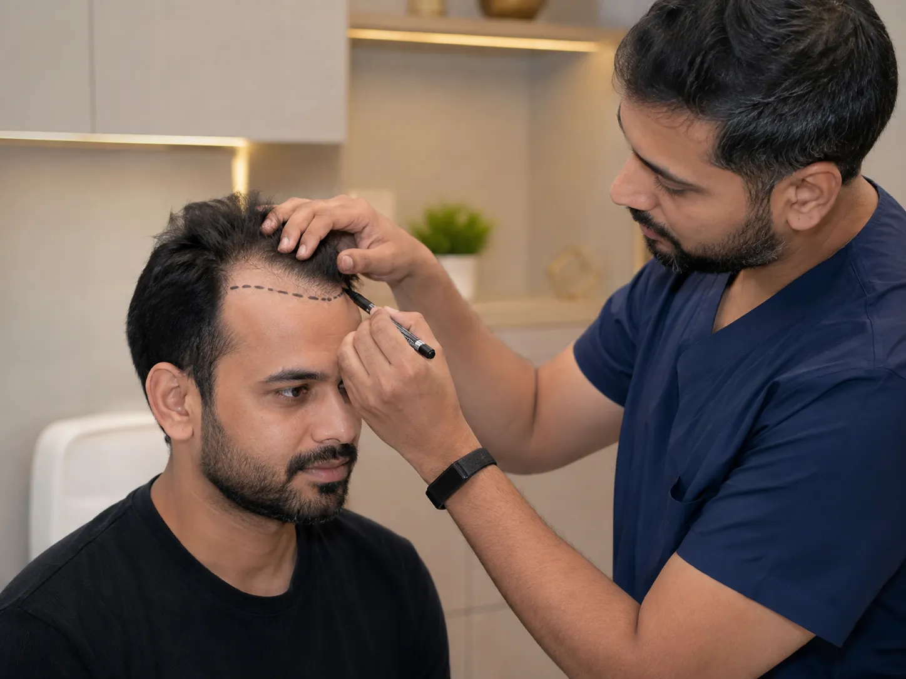
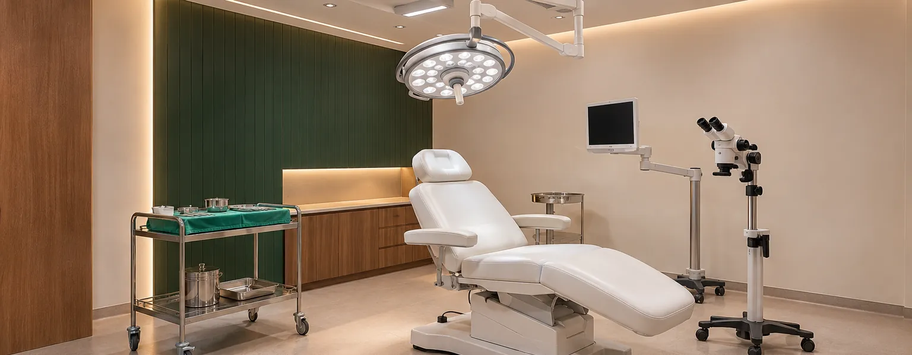
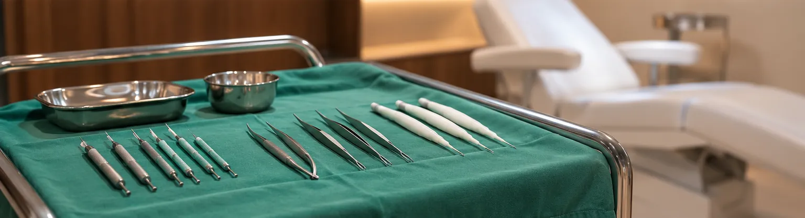

Step 01
Step 01Donor study
Donor density, hair caliber, scalp health and future loss risk are evaluated.
A natural hairline starts with planning.Donor area decides the future.
Hair transplant at SRENOVA is planned around facial proportions, donor capacity, hair-loss stability and long-term coverage strategy.
Hair transplant techniques vary. The result depends on assessment, graft handling, angle, direction, density planning and honest expectations.

Step 01Donor density, hair caliber, scalp health and future loss risk are evaluated.
The hairline is designed to suit age, face shape and realistic density.
 Step 03
Step 03Shedding, early growth and maturation stages are explained before surgery.
A hair transplant moves existing follicles; it does not create unlimited new hair. That makes donor management and design discipline essential.
The consultation reviews whether loss is stable, whether medicines are needed, how many grafts are reasonable and which surgical technique suits the case.
Clients should understand the variables before comparing graft packages.
Density and hair caliber influence achievable coverage.
Shape and height must suit the face and age.
Angles and distribution affect believability.
Medical maintenance may be needed to protect existing hair.
These points give visitors quick clarity before they message the clinic.
Requires candidacy and medical review.
Visible maturation usually takes months.
Chosen after graft planning.
Ideal when donor area and expectations are suitable.
Hair transplant surgery is carried out in a clean, sterile procedure room, with surgical lighting, magnification and instruments prepared for each session.


Representative images of a hair transplant procedure suite.
Hairline and density results after donor-safe hair transplant surgery.
Photos are of SRENOVA patients and are shared with their consent. Individual results vary.
Clear answers help clients compare options with more confidence.
Neither is automatically better. The better choice depends on graft number, area, hair characteristics and surgical planning.
Naturalness depends on hairline design, graft direction, density distribution and donor management.
Graft count can only be estimated after examining the recipient area, donor area and density goals.
No. Shedding and gradual regrowth are expected phases. The clinic should explain the timeline before surgery.
Book a SRENOVA consultation for a careful assessment, realistic options and a treatment plan suited to your concern.